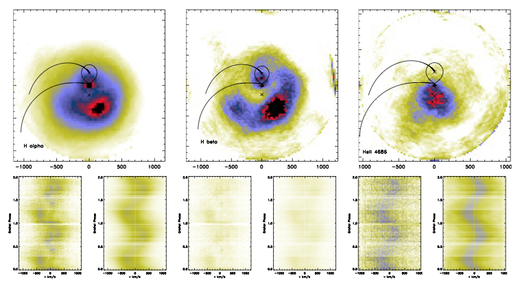

Once upon a time...
During my undergraduate studies, I modelled the mechanical structures of the ESOPO Spectrograph and carry on finite element simulations of heat transfer to measure the thermal gradients during an average observation night at the Observatorio Astronómico Nacional, México. This would guarantee that long exposures would not be affected by dilation/contraction of the optical components of the spectrograph. This work was supervised by Dr. Alejandro Farah. You can access my dissertation here (Just a heads up, it's in spanish)
 ESOPO spectrograph, (left) Finite Element model. (right)
Components used in the simulation.
ESOPO spectrograph, (left) Finite Element model. (right)
Components used in the simulation.
I started my M.Sc. in Astronomy at UNAM in 2009 and worked in different projects involving globular clusters, high mass stellar winds, pseudo-3D photoinoization codes, but mainly I worked in cataclsymic variables. The latter was my dissertation topic supervised by Dr. Juan Echevarria. The observations for this project were taken simultaneously using the 2.1m (spectroscopy) and 84cm (photometry) telescopes at the Observatorio Astronómico Nacional, México. I was fortunate enough to be involved in these exciting (and looong) observation campaigns. During my work at UNAM I developed several routines in IDL & Python to support my data analysis of these objects. Hopefully in the near future I can make these available to everyone who needs them. You can access my dissertation here. (Again, it's in spanish)
 Doppler Tomography of J0644+3344.